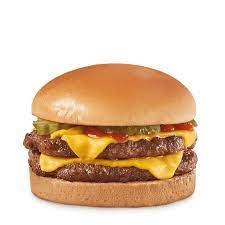

Cheeseburger

A cheeseburger is a hamburger topped with cheese.
By the late 19th century, the vast grasslands of the Great Plains had been opened up for cattle ranching. This made it possible for many Americans to consume beef almost daily. The hamburger remains as one of the cheapest sources of beef in America.
Adding cheese to hamburgers became popular in 1920. There are several competing claims as to who created the first cheeseburger. Lionel Sternberger is reputed to have introduced the cheeseburger in 1924 at the age of 16. He was working as a fry cook at his father's Pasadena, California sandwich shop, "The Rite Spot", and "experimentally dropped a slab of American cheese on a sizzling hamburger." An early example of the cheeseburger appearing on a menu is a 1928 menu for the Los Angeles restaurant O'Dell's which listed a cheeseburger smothered with chili for 25 cents.
Ingredients
- Beef
- Cheese
- A bun
- Greens as lettuce, onion, tomato and pickles
- Sauce as ketchup or mustard
Steps
-
Separate the beef into 4 mounds, or 8 if making double cheeseburgers. Gently roll each mound into a ball (not firmly, we want tender patties not rock hard ones!) then press down into a patty that is slightly wider than the burger bun, to factor in cooking shrinkage.
-
Preheat oil in a heavy-based cast iron skillet over high heat until it is very, very hot. Why a cast-iron skillet? Because it’s made for high heat fast cooking so we can get a great caramelised dark brown crust without overcooking the inside. This burger patty cooks in 3 minutes flat!
-
3-minute cook. Place 2 or 4 patties in the skillet (depending how many fit) and cook the first side for 1 1/2 minutes, pressing down LIGHTLY with a spatula. Note the emphasis on “lightly”! Nobody likes dense, hard patties where all the juice has been squeezed out during the cooking phase!
-
Flip & cheese. Flip the burgers then immediately top with cheese and cook for another 1 1/2 minutes.
-
Assemble the burger with all the other Ingredients